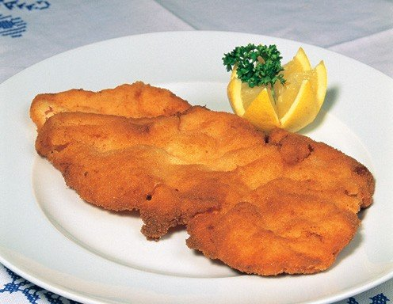

Classic Austrian Schnitzel

Original Austrian Schnitzel
The Schnitzel is a classical Austrian dish which is absolute delicious.
However making it can be an art, because of this is, I am gonna help you make it.
Ingredients
- 4 pieces of of veal "Schnitzel" (160g per piece)
- Salt
- 150g of flour
- 2 Eggs
- 300g of breadcrumbs
- Frying oil
- A lemon
Steps
-
Put the meat in plastic wrap and beat the it till its nice and flat.
Salt it on both sides, turn it in the flour, knock it off, drag it
through the eggs and to finish turn it in the breadcrumbs.
-
Pour two fingers high of frying oil into a frying pan and carefully,
carefully, lay down the "Schnitzel"'s into the pan. When
they are
golden brown, take them out and let them dript out on a baking rack.
-
Plate it with some side like fries or potato, split up the lemon,
drizzle its juice over the "Schnitzel" and enjoy!
Return to home page